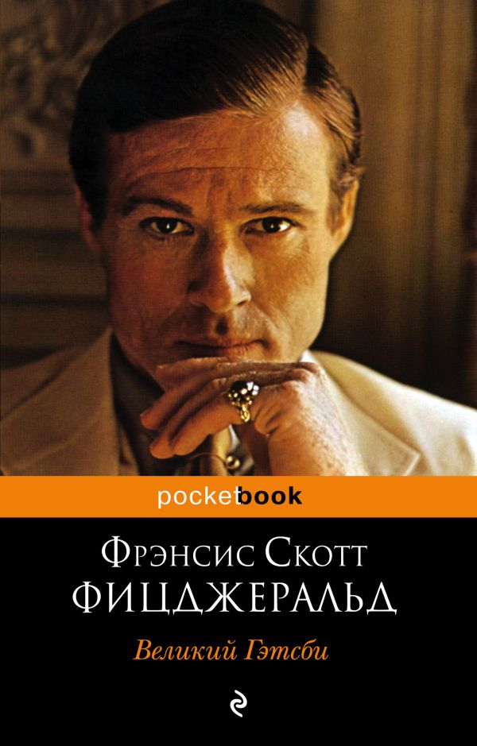
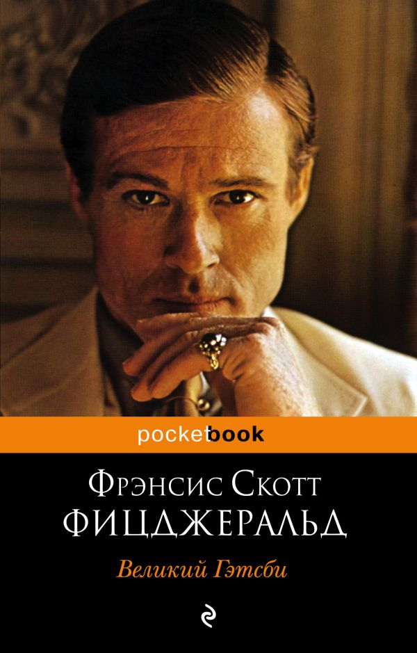
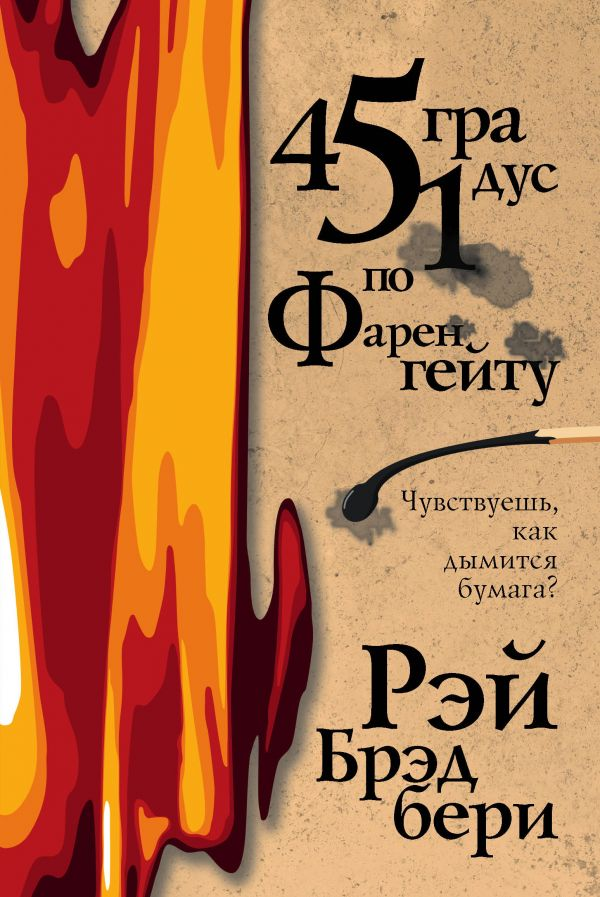
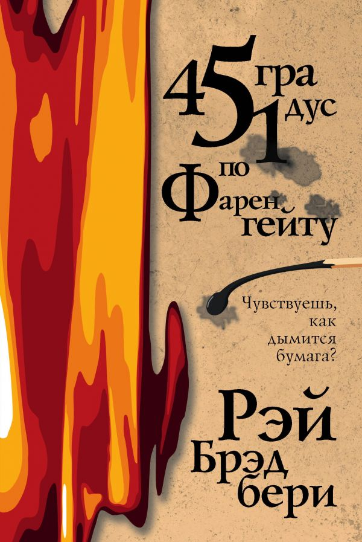
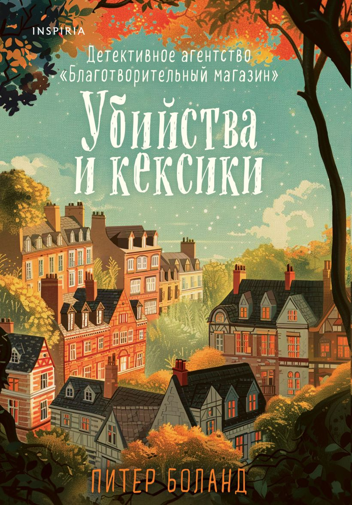
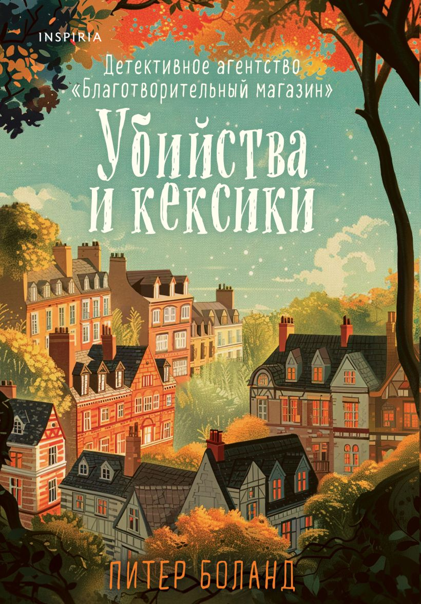
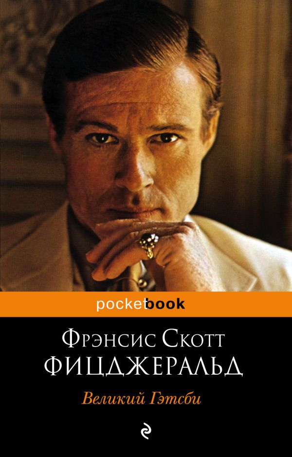
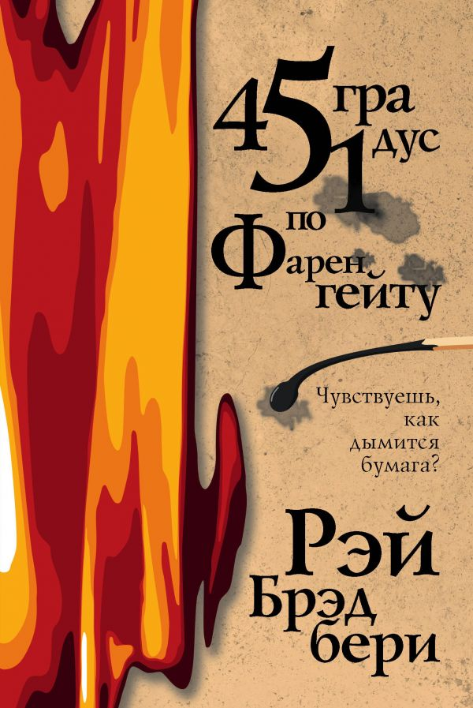
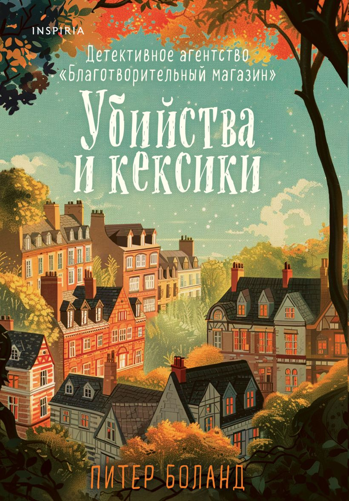

 


 





За последнее десятилетие книжный рынок претерпел значительные изменения. Если в 2015 году доминировали традиционные бумажные издания, то к 2025 году электронные и аудиокниги заняли более 40% рынка.
Наблюдается устойчивый рост интереса к нон-фикшн литературе: книги по психологии, саморазвитию и бизнесу стали настоящими бестселлерами. Особенно заметен всплеск популярности после 2020 года.
| Ключевые изменения: | |
|
|
|